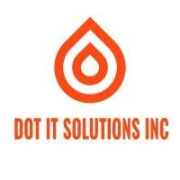
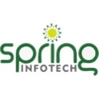

ABOUT ME
Innovative Data Scientist and Machine Learning Engineer with a proven ability to design, implement, and deploy scalable models that drive business value and operational efficiency. Skilled in leveraging advanced algorithms, statistical methods, and big data tools to uncover patterns and deliver actionable insights. Passionate about bridging the gap between data and decision-making, transforming complex datasets into impactful solutions. Committed to learning, sharing, and creating intelligent systems that solve real-world problems

Jan 2024 - PresentDesign Scalable Data Pipelines: Architect and optimize ETL/ELT workflows on AWS (Redshift, S3) or Azure for efficient data ingestion, transformation, and delivery..
Develop Deep Learning Models: Implement and deploy CNNs for image classification and NLP models (using TensorFlow, PyTorch, Keras, Hugging Face) to solve real-world challenges..
Stakeholder Collaboration: Translate business needs into actionable ML solutions to improve decision-making, particularly in fraud detection and risk assessment..
Predictive Modeling: Build regression and classification models with TensorFlow and PyTorch to enhance operational efficiency and business outcomes..
Tools: Python, SQL, ML,DL AWS
DOT IT SOLUTIONS
Data SciencetistJan 2024 - Present
DOT IT SOLUTIONS(INTERN)
Data Engineer(INTERN)(Freelance)May 2023 - Sep 2023
NJIT
Graduate Teaching and Research AssistantJan 2023 - May 2023

Assistant Operations Manager
Nov 2020 - Jul 2022Cryptocurrency Forecasting: Developed predictive models for cryptocurrency prices using regression, decision trees, and random forests
Enhanced Forecasting: Improved prediction accuracy by integrating LSTM networks for time-series forecasting, reducing model error rates.
Azure Integration: Optimized ETL workflows by 35% with Azure services and created PowerBI dashboards, cutting manual data analysis by 50%.
Data Processing: Streamlined data ingestion with Azure Databricks and developed Spark apps, enhancing data warehousing efficiency.
Led warehouse optimization, reducing costs by 25%
ETL Optimization: Reduced processing time by 30% using PySpark on Databricks, improving query efficiency and database performance.
Automation: Automated database deployment, configuration, and maintenance with Ansible, Python, and PowerShell, reducing manual effort and errors.
Tools: Python, ETL, CI/CD, Azure, Databricks
Spring Info Tech Pvt.Ltd.
Data EngineerAssistant Operations Manager
Nov 2020 - Jul 2022
Spring Info Tech Pvt.Ltd.
Data Engineer InternJan 2021 - Sep 2021

The Spark Foundation
Web DevelopmentInternSep 2020 - Dec 2020

NMIT, Banglore
Bachelors in Computer Science andEngineeringJul 2018 - May 2022